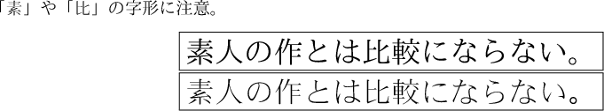

|
|
En toi Pythmeni tes TeXnopoleos
［電脳世界の奥底にて］ |
ZXgtfont パッケージ
～XeTeX でも GT フォントを～
概要
7万字を超える漢字集合を含む「GT書体フォント」 （諸権利は日本学術振興会と東京大学多国語処理研究会に帰属する） を XeLaTeX で使用する為のパッケージである。 現在の GT 漢字の全て（78774 番まで）を使うことができるが、 GT 番号で指定できるのは 69263 番までである。 要するに （u）pLaTeX 用の PXgtfont パッケージの XeLaTeX 版である。
対応環境
- TeX 処理系： XeLaTeX
- GT 書体フォント Windows 版
GT2000{01,09}.TTF … 1.10版
GT2000{02,03,04,05,06,07,08,10}.TTF … 1.02版
GT2000011.TTF … 2.41版
GT2000012.TTF … 1.04版
GT2000013.TTF … 1.10版
GT20000K1.TTF … 1.20版
GT20000K2.TTF … 2.30版
※ 2009 年 6 月現在の最新で最終更新は 2005 年 1 月 27 日。
GTフォント特有の漢字を出力する
命令の体系は pxgtfont パッケージと全く同じなので、 詳しくはそちらを参照してほしい。
\GI 命令
\GI{‹GT番号›}： GT 番号表現\GI{‹フォント番号›-‹SJIS符号値›}： SJIS 符号値表現
以下で「たいと」（GT 番号 57123；SJIS 符号値 GT2000-09 94C4）を出力する例を示す。
% このファイルの文字コードは UTF-8
\documentclass[a4paper]{article}
\usepackage{fontspec}
\setmainfont{IPA明朝}
% 「日本語組版のための設定」は省きます...
\usepackage{zxgtfont}
\begin{document}
\GI{57123}、\GI{09-94C4}。
\end{document}
gtftex パッケージ互換の命令
\GT{‹GT番号›}： GT 番号表現\GT{GT2000-‹フォント番号› ‹SJIS符号値›}： SJIS 符号値表現\GT{GT2000-‹フォント番号› ‹代理文字›}： 代理 文字表現。
% このファイルの文字コードは UTF-8
\documentclass[a4paper]{article}
\usepackage{fontspec}
\setmainfont{IPA明朝}
% 「日本語組版のための設定」は省きます...
\usepackage{zxgtfont}
\begin{document}
\GT{57123}、\GT{GT2000-09 94C4}、\GT{GT2000-09 汎}。
\end{document}
gtfonts パッケージ互換の命令
\GT{‹フォント番号›}{‹SJIS符号値›}： SJIS 符号値表現
% このファイルの文字コードは UTF-8
\documentclass[a4paper]{article}
\usepackage{fontspec}
\setmainfont{IPA明朝}
% 「日本語組(略
\usepackage[gtfonts]{zxgtfont} % \GT を gtfonts 互換にする
\begin{document}
\GT{09}{94C4}。
\end{document}
普通の文字を GT フォントで出力する
GT フォントの中の「GT2000-01」が普通（代理文字を含まない）の Unicode フォントになっているので、これを fontspec 等を用いて指定すればよい。 従って、このための命令は特に用意していない。
以下の例では BXjscls パッケージの文書クラスと zxjatype パッケージを 用いている。 これについての詳細は 「XeLaTeX で日本語する件について」のページを参照。
\documentclass[a4paper]{bxjsarticle} % BXjscls の文書クラスです
\usepackage{zxjatype} % ここより下の2行は zxjatype の命令です
\setjamainfont{IPA明朝} % メインの明朝体を「IPA明朝」にする
\setjafamilyfont{gtmc}{GT2000-01} % 和文ファミリ gtmc を新設
\newcommand*{\gtmcfam}{\CJKfamily{gtmc}\relax} % 単なるマクロ
% zxjatype を使わず素の fontspec を使うならこんな感じ
%\newfontfamily\gtmcfam{GT2000-01}
% zxgtfont はお呼びでない...
\begin{document}
「{\gtmcfam 素}」や「{\gtmcfam 比}」の字形に注意。
\begin{center}
% メインの明朝体のフォントで出力
\fbox{\LARGE 素人の作とは比較にならない。}\par
% GT フォントで出力
\fbox{\gtmcfam\LARGE 素人の作とは比較にならない。}\par
\end{center}
\end{document}

\documentclass[a4paper]{bxjsarticle}
\usepackage{zxjatype}
\setjamainfont{GT2000-01} % メインの明朝体を GT フォントにする
\usepackage{zxgtfont} % \GI 命令も使う
\begin{document}
「\GI{57123}」（たいと）は「\GI{57117}」（タイ）と
「\GI{66699}」（ト）からなる合字で、
苗字であるとされている。%
（ただしこの苗字の存在は確認されていない。）
\end{document}